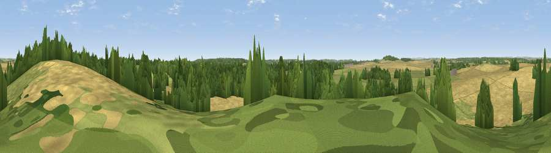

Viewpoint near Stanbridge
#36511 in England · top 68% of its area beats it · near StanbridgeThe view, rendered

A 360° render of this exact spot computed from the terrain model, tree cover and land cover — summer colours, afternoon light, calibrated against photographs of famous viewpoints. Real trees, hedges and buildings will differ in detail.
The panorama
Grey silhouette: terrain skyline in each direction (720 bearings, Earth curvature and refraction included). Dashed green: skyline with trees (+15 m) and buildings (+8 m) as obstacles. Blue strip: how far the ground is visible on each bearing.
Where the view opens
Wedge length = distance to the farthest visible ground on that bearing (vegetation-aware). Rings at 10, 25 and 50 km.
What fills the view
43% cropland · 36% grassland · 20% woodland
Angular shares of the visible panorama (visual magnitude), not map area. Landscape diversity 0.47 (0–1 Shannon).
Key numbers
More beautiful places nearby
The staircase of upgrades: each row has a higher view potential than everything closer. Driving times are estimates from straight-line distance, calibrated against real road routing — check an actual route before setting out.
| Place | Direction | Drive | Score |
|---|---|---|---|
| Chalbury Hill | NNE · 3 km | ~8 min | 56.5 |
| Viewpoint near Merley | SSE · 8 km | ~16 min | 59.5 |
| Viewpoint near Corfe Mullen | SSW · 9 km | ~18 min | 60.9 |
| Viewpoint near Cranborne | NNE · 13 km | ~24 min | 65.0 |
| Hambledon Hill | WNW · 17 km | ~30 min | 72.7 |
| Hambledon Hill | WNW · 18 km | ~31 min | 74.6 |
| Viewpoint near Berwick St John | NNW · 18 km | ~32 min | 78.2 |
| Viewpoint near Harman's Cross | S · 23 km | ~37 min | 80.8 |
50.83665, -1.99533 · source: screening · position refined by local search. Computed location — check access rights before visiting.